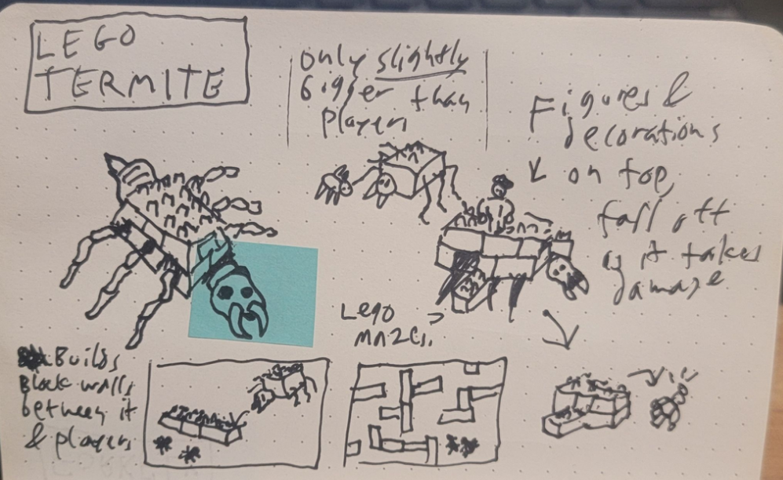
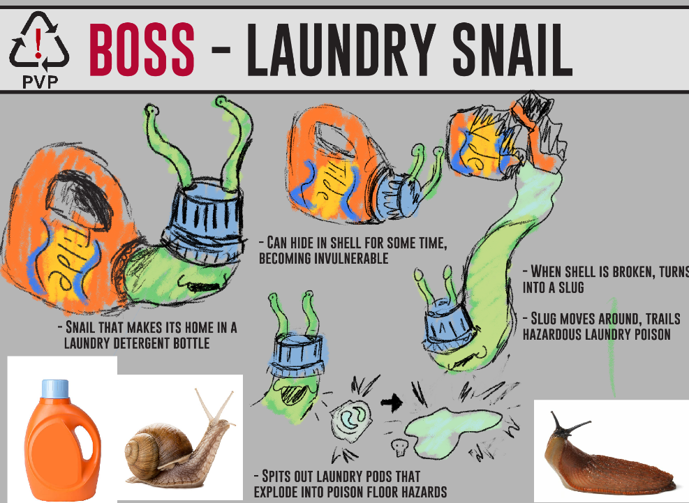
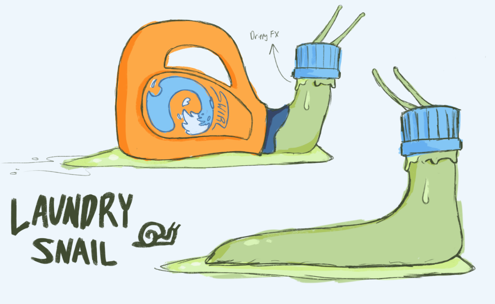
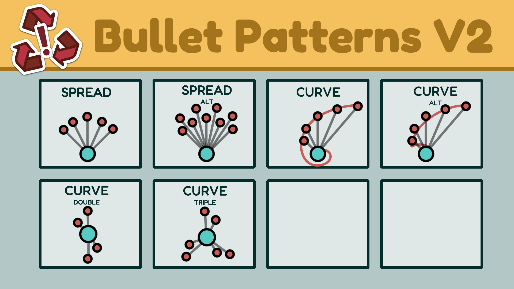
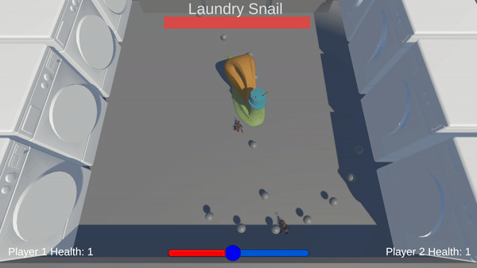
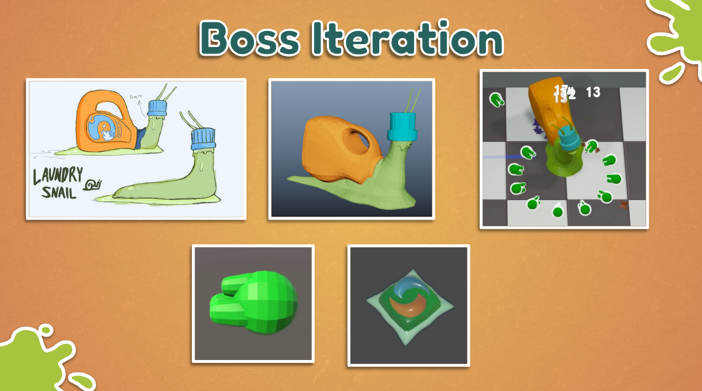

Poly-Vinyl Pests started with a kind of sci-fi premise. Years in the future, humans have covered the world in plastic, and the group of organisms known as "decomposers" have evolved to use these plastics in their anatomy. The goal was to create a two player, bullet hell style game that featured boss monsters themed after this.
The first step was to concept some different bosses. I did a ton of research about this idea, finding lists of decomposers, types of plastics, and real-life examples where this sci-fi premise was happening in our life-did you know there are some mushrooms that can digest and decompose some forever plastics?!
After drafting up a couple of boss designs, I brought them together for the team to vote on which ones they liked best. We ranked them first in how much we liked the premises, then on how fesable they felt. The "Lego Termite," a boss designed to create and destroy its building block environment, is an example of one of these fun premises that were cut for scope.
The team settled on our first boss idea: the Laundry Snail. This was a snail that used a laundry detergent bottle as its shell, wore the laundry cap for its head, and spat out bullets of laundry goo/laundry pods to damage the players. This was a wonderful first step, as it got the whole team on board and excited for the world and character of our game.
To keep everyone excited, I drafted up some narrative documents that outlined more of the personality and design intent of the Laundry Snail, as well as our world at large. Although this game dealt with some scary looking creatures like bugs and slugs, we wanted players to feel invited into our world, and to find our characters cute and lovable. We kept that in mind as we refined the design of the laundry snail further.
With the artistic direction of the laundry snail set, I pushed forward the design of the boss itself by having the team draft up some ideas for its attacks. We created a list of attack ideas. It became quickly clear that this style of game would need a bit of care to put into a bullethell system. I did some research about how some existing bullethell games work, and sketched out a system.
The bullethell system was one of my favorite parts to work on for the game. I developed it so that it would be versitile and modular, as we knew we would want other bosses to use similar attacks, but still kept it simple enough that others on the team could learn and be onboarded about it. I wrote out documentation so that, in the future, others could be onboarded to our team and easily understand how the systems work. This documentation proved to be invaluable, when we did grow our team from 9 to 15 people.
After creating the first prototype of the boss fight, we were able to identify a couple of problems with it. For one, the boss was very sationary throughout the fight, which made it boring to always be shooting in one place. Second, there wasn't much incentive for the players to move around, beyond the occasional dodging of an attack. After playtesting and recieving some feedback, it was clear that we needed to make the boss fight more engaging.
The team had a series of more discussions about this, and came up with a couple of ideas: for one, the boss would have a second phase, where they would break out of their shell and dash across the arena. Second, the boss would spit out homing laundry detergent pods, each with their own health bar, to encourage players to change their direction of fire and move around more often. After implementing and testing these mechanics, they proved to work well.
The entire process of developing the laundry snail was done as a practice to create repeatable, modular systems for our bosses. When drafting our next set, we timeboxed ourselves to just one sprint, to see if we could reuse all of our existing systems to develop a second boss. This turned out to be a hgue success, and we were able to develop a second boss within two months of starting the project.
Poly-Vinyl Pests has been one of the most rewarding projects I've ever been a part of. Having such an excited, skilled, dedicated team, who are all passionate about the many parts of our game, comes through in making the game feel like it's as fun and valuable as we hoped. We were able to use these agile practices to continue to timebox new ideas and systems-such as networking multiplayer, which we gave ourselves two weeks to do some initial implementation, but ended up cutting in favor of spending that time polishing our existing mechanics.
The process of taking a boss concept from a sketch in my pocket notebook, to a 3D model with a slew of intelligent and reactive attacks, remains one of the most fulfilling experiences I've had as a game developer. I can't wait to work with more passionate teams, to see our ideas come to fruition together.